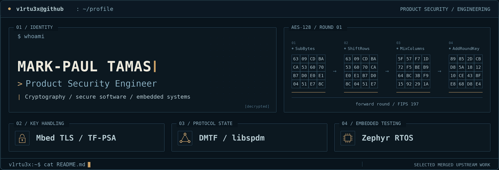

01 / profile
I'm Mark-Paul Tamas, a Product Security Engineer working across security architecture, threat modeling and risk assessment, vulnerability assessment, and secure software engineering. My professional experience spans automotive, industrial/OT, and medical-device security contexts.
I'm particularly interested in where architecture meets implementation: cryptographic key handling, protocol state management, embedded software, and reproducible security testing.
02 / merged upstream work
Mbed TLS / TF-PSA-Crypto · cryptographic key handling
Fixed missing zeroization of sensitive shared-secret material in psa_key_agreement() across return paths.
Merged fix · 1.1 backport
DMTF / libspdm · protocol security
Fixed stale peer DIGESTS and pending-request state retained by libspdm_reset_context(), including cached request data, and added regression coverage.
Merged fix
Zephyr RTOS · embedded software and testing
Added 11 regression tests for Bluetooth Host key-pool behavior and persisted-key loading. Also improved ROM_START_OFFSET defaults for Cortex-M vector-table alignment in MCUboot configurations.
Bluetooth tests · Boot configuration
03 / published research
A Comparative Entropy Analysis of BJT Avalanche Noise, SDR Noise and Algorithmic PRNGs
IEEE · 2026
Experimental analysis of physical-noise and algorithmic randomness sources.
Threat Analysis and Risk Assessment of the Takeover Request Component in Advanced Driver Assistance Systems for SAE Level 2–3
Electronics · 2026
Cybersecurity analysis of automated-driving handover functions.
Threat Analysis and Risk Assessment (TARA) of an Autonomous Emergency Braking (AEB) System
Applied Sciences · 2025
Threat modeling and risk assessment of a safety-critical automotive function.